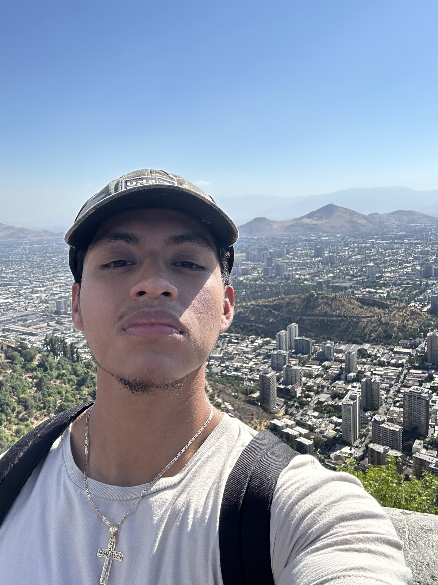

A record of what I heard, what I learned about myself, and the leader I’m becoming.
Introduction
Who I am, why this site exists, and the project behind it.
Self-introduction

Me overlooking Santiago, Chile. I have traveled more since coming to Hopkins than in my entire life before, and this photo captures how much I love exploring new places and trying new things.
Hi! I’m David, a 21-year-old Mexican American, Catholic, first-generation college fourth-year student in the Whiting School of Engineering. I get my energy from being around friends and family. I grew up in Ohio in a Mexican household with two immigrant parents, two older sisters, and a bunch of cousins, aunts, and uncles. We played soccer together all the time, which is where my love of soccer came from and later grew into my love of the gym in high school. That is also when my self-development journey started, where I try to become a better version of myself every day. People are the most important part of my life, so I try to bring community into that journey.
Moving from Ohio to Baltimore was tough because I’m so family-oriented. I did not know a single person when I came to Hopkins, and I have traveled more here than in my entire life before. I like exploring new places, meeting new people, and trying new things. When I can, I make plans with friends, because that is where I get to let loose and be myself.
I was admitted as an Electrical Engineering major and I’m looking to enter the workforce with a B.S. in Electrical Engineering. I’m really interested in the semiconductor industry, which designs, tests, and manufactures the chips in so many of today’s devices. I hope to work at a semiconductor company for many years, earn my master’s in ECE with a concentration in Microelectronics, and eventually become a design engineer who implements chips on devices.
Purpose of this website
This website lets me reflect on where I have been, where I am, and where I want to be. I do that by interviewing people who know me, examining my own leadership experiences, and presenting my own leadership theory. Its significance is that it makes me look closely at my character, think about who I am in the eyes of others, and see how I can improve.
Project context and significance
This site is my Best Self Portfolio, the largest assignment in my leadership course [add course name]. It asks me to interview two people about a time I was at my best, reflect on my 16P and conflict assessments, build an original leadership theory, and set one growth goal. Together these pieces show how I lead now and how I want to lead next.
References
Add references for this section.
Interviews
Best Self stories from the people I interviewed, and what they showed me.
Best Self stories
I asked two people from different parts of my life, my sister and my best friend, the same question: “Can you tell me one time when I was at my best self and be as descriptive, honest, and share as much detail as possible?” Their answers are below in their own words.
Adriana Garcia, my sister and a Civil Engineering Analyst at Kimley-Horn.
Adriana Garcia
My sister · Civil Engineering Analyst, Kimley-Horn
Adriana is a Civil Engineering Analyst at Kimley-Horn and Associates, Inc. in the Chicagoland area. She is originally from Columbus, Ohio, and graduated from the University of Dayton in 2024 with a degree in Civil Engineering focused on infrastructure. She works on Kimley-Horn’s Land Development team on residential, commercial, educational, medical, retail, and mixed-use projects, and she serves on the Scholarship Committee of the Commercial Real Estate Women (CREW) Chicago Chapter. Outside of work, she enjoys exploring Chicago’s food and architecture, fitness, walking, traveling, and watching shows and movies.
A time when David was at his best was during high school. Throughout those years, he demonstrated ambition, leadership, and strategic thinking. From his freshman year onward, David was not only academically successful but also worked on improving his skills in soccer and band while maintaining strong connections with his peers, family, and community. These qualities remained consistent through his senior year, when he graduated and moved away for college.
During soccer season, David went beyond the expectations of scheduled school practices. He organized scrimmages and games at a local community park, creating additional opportunities for himself and others to develop their skills. He also practiced independently during his free time to maintain his endurance and continue improving as a player. His initiative demonstrated not only his dedication to personal growth, but also his ability to bring people together. His peers respected him as a young leader and saw him as someone who created an inclusive and supportive environment.
At the same time, David was also a dedicated member of the school band, where he played the trumpet. He consistently set aside time on weekends to rehearse independently and would even offer to perform for his family. His ability to balance these commitments demonstrated a strong sense of responsibility and maturity. Even at a young age, David understood the importance of following through on his responsibilities and honoring the commitments he made.
Above all, David prioritized his academic growth. His curiosity was one of the qualities that set him apart from his peers. He studied every day and frequently went beyond the expectations of his coursework by exploring subjects and topics outside of his required curriculum. David held himself to high standards, set meaningful goals for himself, and consistently worked toward achieving them.
Overall, David’s high school years demonstrated what he is capable of when he is focused, motivated, and at his best. He showed discipline, initiative, emotional intelligence, curiosity, and analytical thinking. Not only did he demonstrate these qualities in only one area of his life, but he applied them consistently across academics, athletics, music, relationships, and his community. His ability to pursue his goals while remaining connected to and supportive to those around him was one of the clearest examples of David at his best.
Mahmoud Radwan, my best friend and a fellow Hopkins SHPE member.
Mahmoud Radwan
My best friend · Electrical Engineering, Johns Hopkins University
Mahmoud is a senior studying Electrical Engineering at Johns Hopkins University. He is my best friend and a fellow member of our school’s Society of Hispanic Professional Engineers (SHPE) chapter, and he was one of the members I drove to this year’s SHPE National Convention in Indianapolis.
One time you were your best self is when we were at the SHPE national convention this year. This year’s convention was in Indiana, and the chapter was only able to cover for people’s registration and hotel, not travel. Because of this, members had to pay for their own flights however to help support those who couldn’t afford it, David offered to drive them in his own car. I was one of those people David brought and he never asked for anything in return. Because of how far the drive was, we decided to depart from Hopkins the day before the convention started. But since the hotel was booked for the first day of the convention, David let everyone crash at his house in Ohio the night before the convention. When we got to his house, it was nothing but welcoming. His mom cooked us beef broth and let me sleep in a guest room.
Once we were at the convention, I felt that David was super focused on getting done what he needed to get done, but especially outside convention time I felt that he was genuinely concerned about the people we were talking to. I also felt like he was supporting people in terms of his experience at the convention, but by also just being a positive presence. While we were waiting in lines during the company expos, David would talk with others and give them advice on how to succeed at the SHPE National convention, like how he did for me during my first time at last year’s convention.
Reflection on their responses
Hearing my sister and best friend talk about me in this manner means a lot to me because I often feel that my actions go unnoticed. This doesn’t mean that I yearn for people’s praise every time I support others, because for me, helping others comes naturally. I don’t need recognition. However, whenever someone does take note of and compliment my actions of support, it makes me feel good about myself.
For me, character is a huge part of my identity, and I want to be known as a person who constantly brings positive energy and helps those around me. This can be done through a small gesture or a large contribution.
A theme about myself: supporting others while pursuing my goals
One theme I see in these stories is supporting others while pursuing goals. The story of me organizing scrimmages outside of soccer practice and the story of me helping others during the SHPE National Convention both demonstrate my best self: supporting others along the way to my own goals of becoming a better soccer player and getting a job, respectively.
References
Add references for this section.
Assessment reflection
What my assessment results say about me, and how I respond to them.
16P personality results
My result is ESFJ-T: extraverted, observant, feeling, judging, and turbulent. The 16P framework describes personality along five aspects, and I reflect on each one below. Several of my scores sit close to the middle, especially Judging and Turbulent at 51%, so I see these as tendencies rather than fixed traits.
Aspect
My result
What it means for me
Mind
Extraverted 67%
I get energy from friends and family. Making plans with friends is where I let loose, and leaving my large family in Ohio was the hardest part of moving to Baltimore.
Energy
Observant 61%
I notice the people and details around me. On my project team I saw right away that we were all Hispanic, which made connecting easy.
Nature
Feeling 54%
I put people’s feelings first. I did not want teammates to feel bad about themselves, so I kept the group’s morale positive.
Tactics
Judging 51%
I’m decisive, thorough, and organized. I assigned roles, set weekly meetings, and made the call to finish the project when the deadline got close.
Identity
Turbulent 51%
I’m self-conscious, sensitive to stress, success-driven, and eager to improve. That matches the self-development journey I started in high school.
Personality in a leadership experience
In my second semester at Hopkins, I took my first electrical engineering course with a final group project. We got to pick our partners, so I formed the team, but nobody else knew each other. My extraversion mattered right away: I introduced everyone and led by assigning roles and setting weekly meetings. We were all Hispanic, which made conversation easy, since I grew up around people with similar backgrounds.
At nearly every meeting, some members did not show up or had made little progress. Even though I was leading, I never called anyone out or got upset, because I did not want anyone to feel bad and I wanted to keep morale up. As the deadline got close and we were still not done, I finished the project on my own so we would not get a bad grade and would have a working demo for the professor. It worked, and our team got full credit.
[Add what this taught you about how your personality helped and hurt you as a leader.]
Conflict assessment results
My highest score is Collaborating (9), the “owl,” someone who values both their goals and their relationships. Accommodating (8, the “teddy bear”) and Compromising (8, the “fox”) follow, then Competing (6, the “shark”) and Avoiding (5, the “turtle”). Accommodating is a close second, and it fits my habit of putting others first. Accommodators often seem agreeable and easygoing, but putting others’ needs first all the time can build resentment, so they benefit from saying what they need.2
I think being an owl is a recent change. I used to be more of a shark who put goals ahead of relationships. Growing up in a Mexican, family-centered household, I was born into my relationships and never had to work to build them. They just happened. Leaving for college meant creating relationships on purpose, and that moved me from valuing goals over people to valuing both. I now actively spend time with the people in my life.
Conflict style
Score
Competing (shark)
6
Collaborating (owl)
9
Compromising (fox)
8
Avoiding (turtle)
5
Accommodating (teddy bear)
8
A conflict style on a team
Collaborating showed up this past semester at the Society of Hispanic Professional Engineers (SHPE) National Convention in Indianapolis, where I went with several members of our school’s chapter. The conference is about professional development: networking, company workshops, and talking with employers to find job opportunities. I was this year’s National Convention chair, which meant Hopkins SHPE members looked to me for advice on how to succeed there.
It was my third national convention, so before we left I laid the groundwork by sharing a roadmap of how I landed my last two internships. Once we arrived, I had to balance my own goal with the chapter’s. My goal was to get a full-time engineering role with one of the attending companies. The chapter’s goal was for everyone to feel prepared to approach recruiters and pitch themselves, as I had in past years. I also shared what I had learned with students from other schools I had never met. By the end, everyone in my chapter had a great time and felt prepared. That is how I put my goals and my relationships on equal footing.
[Optional: replace this section with a 3-5 minute video that explains your visual and cites sources aloud.]
Name and origin
Leading by example and creating a positive team atmosphere. My theory comes from a current example in sport: Pep Guardiola and FC Barcelona. Guardiola captained Barcelona as a player and won six Spanish league titles and the 1991/92 European Cup with the club. He returned as coach in 2008, and his 2008/09 team, set up in a 4-3-3, won the treble of La Liga, the Copa del Rey, and the Champions League. That squad is often ranked among the best in football history.3 I think it worked because he had already done the work he asked of others, and he built an environment where players wanted to push each other.
It also comes from my own experience on my electrical engineering project team, where I led by example but did not build the accountability that would have made the team share the work.
What I want to be known for: someone who cares about the people around me, works hard, brings positive energy everywhere I go, and inspires people to be the best version of themselves.
The visual
Barcelona’s 2008/09 4-3-3 as a framework for how I lead.
The pitch is the team atmosphere. Nothing else works if people don’t feel positive and supported. The back line, foundation: I show up and do the work I ask of others, in plain view. The midfield, connection: I read each teammate and adjust how I lead, as the squad’s midfielders linked every part of the team. The front line, drive: I push myself and the people around me to be better, and I celebrate the results together. [Edit this mapping so it matches your thinking.]
Leadership and followership
Leaders: Situational Leadership says effective leaders adapt their approach to each follower’s competence and commitment, moving among telling, selling, participating, and delegating.1 The Blake Mouton Grid describes five leadership styles based on concern for people and concern for results.2 My theory aims for high concern on both: leading by example drives results, and a positive atmosphere shows concern for people.
Followers: Followers take cues from what leaders actually do, so visible effort sets the standard, and a positive climate makes it safe to ask for help. [Add a study or data point on role modeling, team climate, or followership.]
Putting it into practice
Do your part first and let the team see it.
Open each meeting with a quick check-in so everyone feels heard.
Match your style to each teammate: more direction for someone new, more trust for someone experienced.
Give kind, direct feedback early instead of absorbing the work yourself.
Celebrate progress out loud.
Limitations and nuances
Leading by example can turn into doing everyone’s work, which is what happened on my project. A positive atmosphere can also avoid hard conversations. And Barcelona’s squad was full of exceptional talent, so results will not transfer one-to-one to a student team. [Add how you checked that this differs from established theories.]
References
Hersey, P., & Blanchard, K. Situational Leadership Theory. [Add link.]
Blake, R., & Mouton, J. The Managerial Grid. [Add link.]
[Add the source for Guardiola’s playing and coaching titles.]
Growth
Where I’m headed and how I plan to get there.
My area of growth
I want to grow at holding teammates accountable. On my project team I avoided calling anyone out and ended up doing the work myself.
One concrete behavior change
When a teammate has not made progress by our weekly check-in, I will message them privately within 24 hours, ask what is blocking them, and agree on one specific task with a date. I will not take the task over unless we have agreed on that together.
How this helps a current team
[Name one current team and explain how this change will help it, for example by sharing the workload and keeping deadlines on track.]